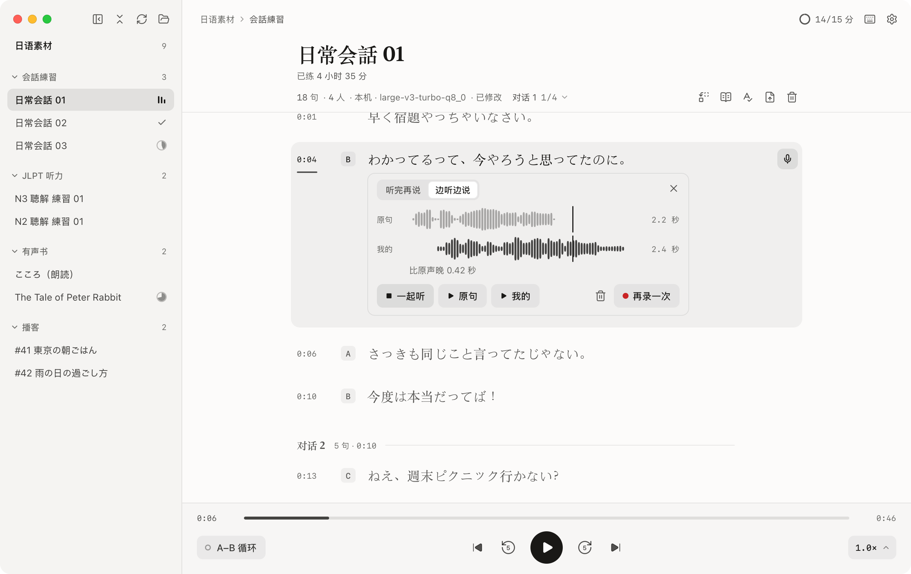
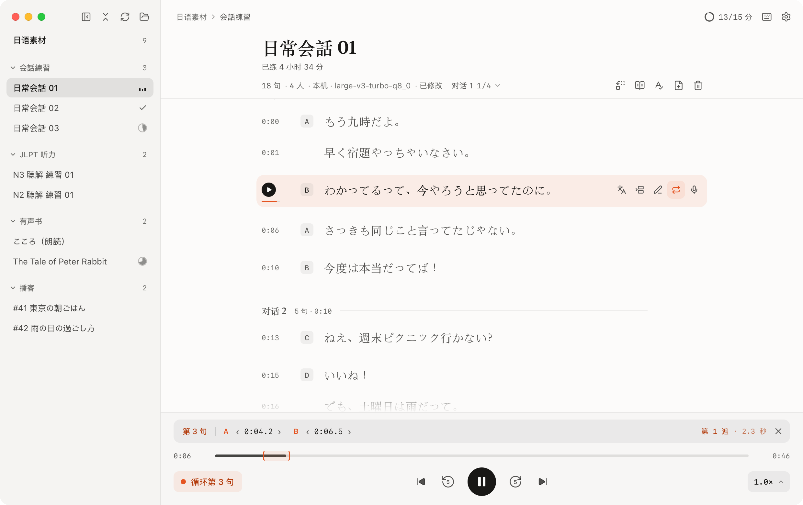
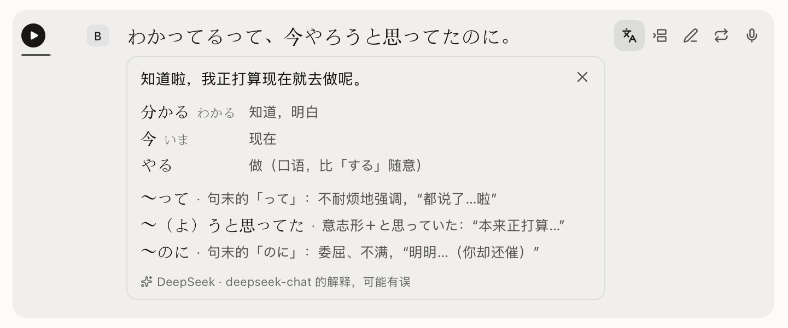
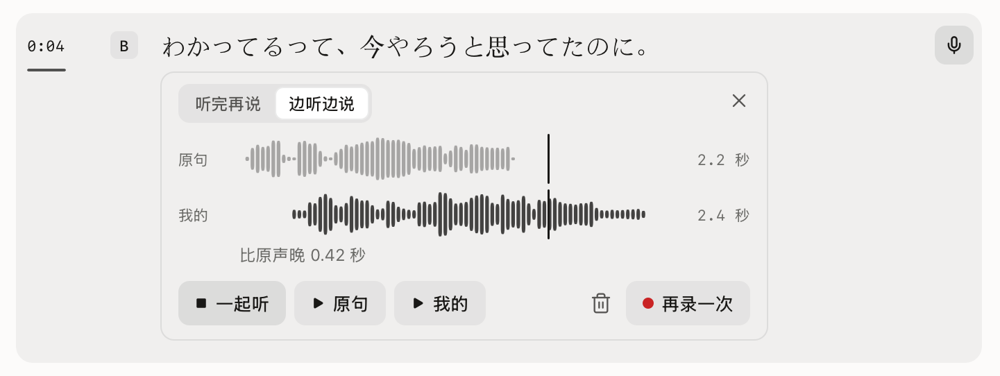
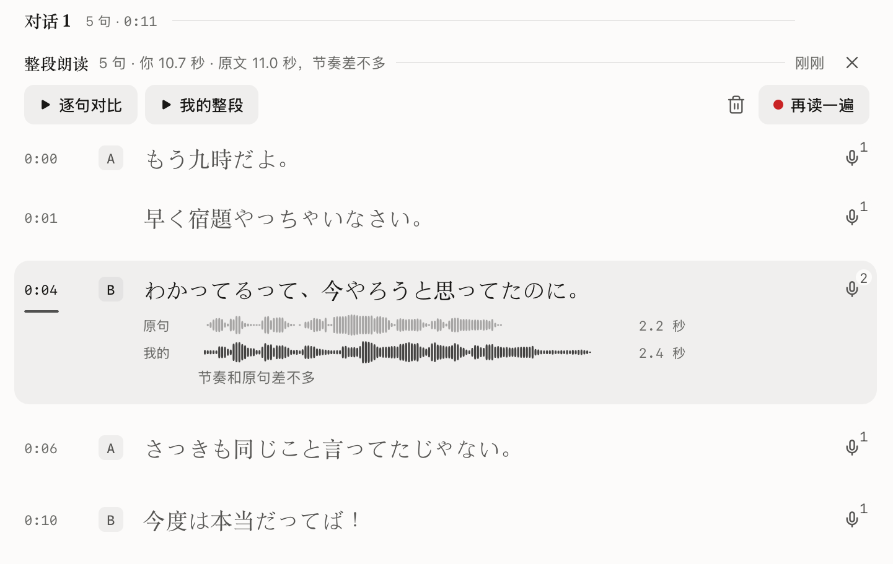
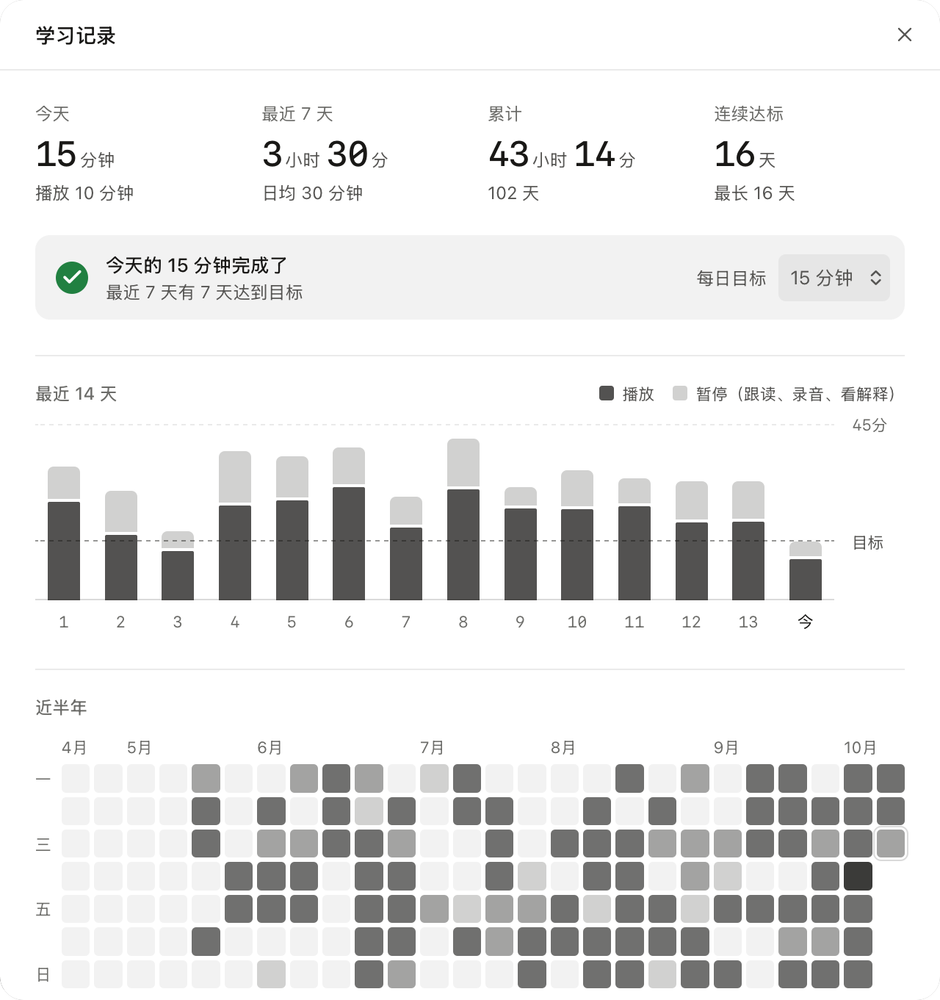
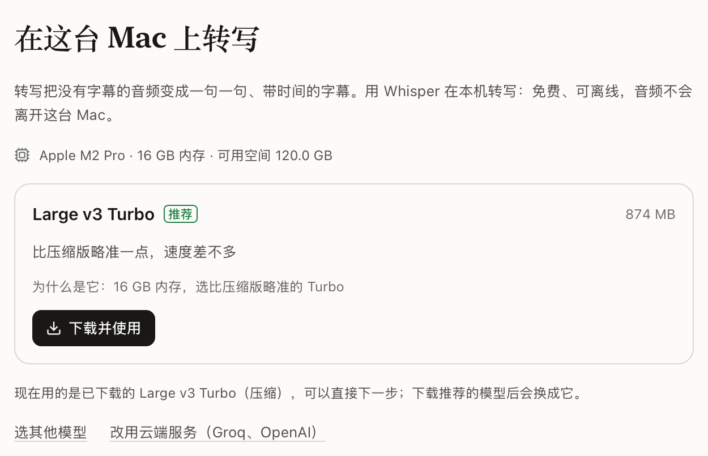

お手本の声と、自分の声を並べて聴く。
Shadowing（シャドーイング）は、Mac と Windows のためのシャドーイングアプリです。手元の音声ファイルをドラッグ＆ドロップするだけで、一文ずつ自動で文字起こし（Mac なら完全ローカルで処理）。この一文をループ再生したり、音程を変えずにスロー再生したり、聞き取れない箇所は AI 解説を展開。そしてお手本に続いて声に出せば、あなたの録音とお手本の波形が上下に並び、テンポやタイミングのズレが一目で分かります。
Windows 版インストーラーはコード署名前のため、SmartScreen が表示された場合は「詳細情報」をクリックしてから「実行」を選択してください（インストール手順）。

インストール不要。まずはここで一文、声に出してみる。
アプリ付属のサンプル作品《ごんぎつね》。文をクリックするとその文をループ再生し、音程を変えずにテンポを落とせます。「シャドーイング」を押せば、まずお手本が流れ、続いてあなたの番。お手本と吹き込みを聴き比べられます。
音声：LibriVox、ekzemplaro 氏朗読（CC0）。ブラウザ体験版の解説はあらかじめ用意されたサンプルです。アプリ内ではお好みの AI が自動生成します。録音データはお使いのブラウザ内のみで処理され、外部には送信されません。
手元にある音声が、そのまま教材になる。
音声ファイルが入ったフォルダを選ぶだけですぐに練習開始。字幕ファイル（SRT / VTT）の読み込みはもちろん、字幕がなくても Mac 上で直接文字起こし（Windows 版はクラウド連携）。自然な息継ぎで文を区切り、誰が話しているかも見分けます。

- 完全ローカル文字起こし
- Whisper が Mac 上で直接動作し、Apple Silicon では Metal により高速処理。インターネット通信は一切不要、追加料金もかかりません。初回起動時に Mac のチップ、メモリ、ストレージの空き容量を自動判別し、最適なモデルをご提案します。さらなる高速化を求める場合は Groq や OpenAI などのクラウド API も選択可能（Windows 版はクラウド API を使用）。
- 音程を変えずにスロー再生・一文ループ
- 文をクリックするだけで、その文から即座に再生。キーボードの S でループ、[ ] で前後の文へ移動でき、聴いた回数も記録されます。再生速度は 0.5倍速から2.0倍速 まで、0.05刻みで自在に調整可能。字幕のない音声でも、L キーで A-B 区間を指定すれば同じようにループ再生できます。
- 会話のセクション分割
- 1つの音声に複数の会話が含まれている場合（リスニング問題の大問など）、長い無音や話者の交代を検知して自動でセクション分け。小見出しの名前変更や結合、「このセクションをループ」や { } キーでのセクション移動も思いのままです。
- 話者の分離・識別
- AB 会話の中で誰がどの発言をしたかを色分けして表示。声紋の分析もすべて端末内で安全に計算されます。
- 自信のない箇所のハイライト
- 文字起こしの確信度が低い単語には点線を表示（例：飴）。その場で直接編集したり、一括置換したり、AI 校正のアドバイスを参考にしながら修正できます。修正するかどうかはあなた次第です。
- 既存の字幕ファイルを読み込み
- 音声ファイルと同じフォルダにある同名の SRT や VTT ファイルを自動認識。修正内容はアプリ内のみに保存され、元の音声ファイルを書き換えることはありません。どこまで聴いたかも音声ごとに記憶されます。

聞き取れなかった文は、開くだけですぐ理解。
I キーを押すと、その文の現代語訳・重要単語・文法ポイントが瞬時に展開。口語特有の省略や縮約もわかりやすく解説されます。一度生成された解説は保存されるため、次回からは待ち時間ゼロです。
- お好みの AI を連携
- ChatGPT アカウントや OpenRouter ならブラウザ経由でワンクリック連携。OpenAI、Anthropic、Gemini、DeepSeek の API キーを設定することも、端末ローカルで動く Ollama や LM Studio を使うことも可能です。
- AI なしでも快適に動作
- AI の設定や字幕がなくても、音声再生、一文ループ、シャドーイング録音といった基本機能はすべて完全に利用できます。
0.7 版新機能
そして、あなたの番。
文の横にあるマイクボタンを押すか、M キーを押して録音開始。ヘッドホンがなくても大丈夫：スピーカーから流れるお手本の音声を自動で除去し、あなたの声だけをクリアに録音します。話し終わって一呼吸置くと、自動で録音が完了します。

- 聞いてから話す、聞きながら話す
- まずお手本を聴いてから自分の番になるモードと、お手本に合わせて同時に声を重ねるモードの両方に対応。録音後は自動で聴き直し：お手本のあとに自分の声を再生することも、両方を同時に流して重なり具合を確かめることもできます。
- 2つの波形を並べて比較
- お手本と比べてテンポが速いか遅いか、発音の立ち上がりが何秒ズレたかを明示。どちらの波形をクリックしてもその音声を再生でき、P キーで直前のテイクをすぐに聴き直せます。
- AirPods やイヤホンマイクにも対応
- Bluetooth イヤホンの使用時は、自動的に Mac 本体の内蔵マイクで録音するように制御。イヤホンの通話モードによる音質劣化を防ぎ、クリアな音声でお手本を聴きながら練習できます。
- 通し録音
- セクション全体や長文を一息に読み通す練習も可能。自分が読むスピードに合わせてハイライトが進み、文末で一呼吸置くと次の文へ自動進行。お手本と一緒に読むこともできます。録音終了後は文ごとに自動分割され、一文ずつの詳細な比較が可能です。
- 歌詞のように自然に振り返る
- 録音済みの文に差し掛かると、下に自動であなたの録音カードが展開。「通して聴く」を押せば、一文ずつ流れるように全文を振り返ることができます。
- すべてのテイクをローカルに保存
- 録音データはすべてお使いのパソコン内に自動保存され、過去のテイクをいつでも振り返ることができます。設定画面から使用容量を確認でき、元の音声を削除した際の一括クリーンアップも簡単です。

毎日の小さな積み重ねを、確かな手応えに。
実際に声を出して練習した時間だけを正確に計測。目標時間を設定すると、トップバーのリングが少しずつ満たされ、達成するとグリーンのチェックに変わります。
- 実践した時間だけをカウント
- 音声の再生、シャドーイングの録音、吹き込んだ声の確認時間がすべて対象。一時停止後も 90 秒以内の操作であれば継続時間としてカウントされます。日毎の切り替えは午前4時のため、夜遅くの練習もその日の実績として記録されます。
- 目標設定と連続日数
- 1日の目標はデフォルトで15分（5分〜60分で変更可能）。直近14日間の棒グラフや過去半年間のヒートマップカレンダーで、継続のリズムが一目で分かります。

0.9 版新機能
足りない機能は、プラグインで広がる。
プラグイン機能によって、Shadowing の可能性はさらに広がります。誰でも自由に開発可能です。第1弾公式プラグイン「YouTube インポート」：動画の URL をコピーしてアプリ内で ⌘V を押すだけで、音声と公式字幕が指定フォルダに直接届きます。映像を見ながら練習したい場合は動画ごと保存も可能です。
- URL を貼るだけで即インポート
- タイトル、再生時間、公式字幕の有無を確認し、保存先フォルダを選んでダウンロード。ダウンロード中も他の教材で普段どおり練習できます。音声はオリジナルの M4A 音声を無劣化で抽出。動画が必要な場合も H.264 映像と音声を高速結合するため、ffmpeg 等の面倒な追加インストールは一切不要です。
- 誰でも作れるシンプルな設計
- プラグインは実行ファイルと manifest.json だけで構成され、LSP や MCP と同様に標準入出力の JSON-RPC で通信します。言語の制限はなく、万が一プラグイン側でエラーや遅延が起きてもアプリの再生は止まりません。
- インストール前の安全確認
- アプリはユーザーのフォルダ全体をプラグインに渡しません。専用の一時ディレクトリにのみ書き込ませ、安全確認後に正規のフォルダへ配置します。インストール前にはアクセス先の通信先や実行内容を明示し、公式プラグインディレクトリに掲載されるものは事前にソースコードを審査しています。
あなたの音声と録音は、パソコンの外に出ません。
話者の識別も、録音に入り込んだお手本音声の除去も、すべてお使いの端末内で完結。Mac では文字起こしもオフラインで動作します。更新チェックを除き、通信が発生するのはクラウド AI 機能（Windows 版の文字起こしを含む）やプラグインを明示的に使ったときだけです。
- アクセスするのは指定したフォルダのみ。アプリ付属のサンプル教材以外、パソコン内の他のファイルに触れることは一切ありません。
- テレメトリ（利用状況送信）なし。利用履歴や個人データを収集することは一切ありません。設定画面では各 AI 機能の送信先も明記しています。
- API キーはシステムの安全な保管庫に保存（macOS キーチェーン、Windows 資格情報マネージャー）。アプリ内のデータには
sk-…abcdのような末尾のヒントのみを残します。 - ローカルモデルは初回使用時のみダウンロード。バージョンは固定され、SHA-256 チェックサムで改ざんがないことを確認します。
19日間で17バージョン。ハイペースで進化中。
新バージョンが公開されると起動時にお知らせします。「更新して再起動」を1クリックするだけで完了。設定や字幕、録音データもすべてそのまま引き継がれます。
- 0.14
プラグイン注釈。プラグインが字幕の文に直接注釈を付けられるようになりました。第1弾として、漢字の上に読みがなを表示する「日本語ふりがな」プラグインが登場。
- 0.13
動画ファイルの再生に対応。mp4 や mov 動画も音声と同様に速度変更、ループ、シャドーイングに対応。並列表示やシアターモード、字幕マスク、アフレコ練習、YouTube インポートでの動画保存が可能になりました。
- 0.12
1文字ずつのカラオケ風ハイライト。文字起こしされた字幕が、音声の再生に合わせて1文字ずつ（英語は1単語ずつ）リアルタイムに点灯します。
- 0.11
Windows 版リリース。64 ビット Windows 10 / 11 に対応。再生、ループ、シャドーイング録音を Mac 版と同じ快適さで利用可能（ショートカットは Ctrl、文字起こしはクラウド連携）。
- 0.10
英語インターフェースに対応。OS の言語設定に自動で追従するほか、設定画面からいつでも手動で言語を切り替えられます。
- 0.9
プラグイン機能と YouTube インポート。URL を貼り付けるだけで動画の音声と公式字幕をフォルダに一括取り込み。AI 解説も語順ごとの分解やニュアンス解説に対応。
- 0.8.1
アプリ内で各バージョンの新機能と更新内容を直接確認できるようになりました。
- 0.8
文の手動分割・結合、同一文の連続録音。一文ずつのシャドーイング特訓に対応し、再生ボタンで録音や再生を一時停止できるようになりました。
- 0.7
シャドーイング録音と通し録音。自分の声とお手本を波形で比較。ヘッドホンなしでも録音可能になり、長文の一気読みと文単位の自動分割にも対応。
- 0.6
会話セクションの分割。1つの音声に含まれる複数の会話を自動検出し、名前変更、結合、セクションごとのループ再生が可能に。
- 0.5.1
アップデート後にキーチェーンのパスワードを繰り返し求められる問題を修正。
- 0.5
初期セットアップガイド。Mac のスペックに応じたローカル文字起こしモデルの自動提案、ChatGPT アカウント連携、.dmg 配布形式に対応。
- 0.4
練習の記録と毎日の目標、アプリ内自動アップデート機能を追加。
- 0.3
インストーラーの容量削減、保存処理の安定化、長い字幕に対する AI 校正のタイムアウトを解消。
- 0.2
再生順序の変更に対応（フォルダ内ループ、1曲ループ、最後まで再生して停止）。
- 0.1
最初の公開バージョンをリリース。
すべての更新履歴を見る。GitHub リポジトリを Star すると、Linux 版のリリース情報などもいち早く受け取れます。
インストール
Mac 版は Apple Silicon（macOS 11 以降）、Windows 版は 64 ビットの Windows 10 または 11 に対応しています。初回起動時には4ステップの初期ガイド（学習言語の選択、文字起こし方法の選択、AI のログイン、サンプルでの練習）が表示されます（途中のステップはスキップ可能）。
macOS（Apple Silicon）
インストーラーをダウンロード
こちらから最新版（.dmg）をダウンロードしてください（約 11 MB）。
「アプリケーション」フォルダへドラッグ
ダウンロードした .dmg ファイルをダブルクリックし、開いたウィンドウで Shadowing アイコンを「Applications」フォルダへドラッグ＆ドロップします。
-
開けない場合や「壊れている」と表示されるとき
本アプリは現在 Apple による公証（Notarization）取得前のため、ブラウザ経由でダウンロードした際に macOS のセキュリティ機能によって警告が出たり、「壊れているため開けません」と表示されることがあります。Spotlight（⌘ スペース）で「ターミナル」を開き、以下のコマンドを貼り付けて Return を押してください。自動で安全にダウンロード・インストール・起動が行われ、以降は通常のアプリと同様にダブルクリックで起動できます：
curl -fsSL https://shadowing.nihongo.day/install.sh | bash1〜2の手順をスキップして、このコマンドだけで直接インストールすることも可能です。
以降はアプリ内で自動更新
新しいバージョンがリリースされるとアプリ内で通知されます。更新内容を確認の上、ワンクリックで最新版へアップデートできます（インストーラーの署名も自動検証されます）。
Windows（x64）
インストーラーをダウンロード
こちらからWindows 版（.exe）をダウンロードし、ダブルクリックで実行してください。現在のユーザー環境にインストールされるため、管理者権限は不要です。
「Windows によって PC が保護されました」と表示された場合
インストーラーのコード署名準備中のため、Microsoft Defender SmartScreen の画面が出ることがあります。「詳細情報」をクリックし、「実行」を選択してください。
以降はアプリ内で自動更新
Mac 版と同様に、新バージョンが公開されるとアプリ内でお知らせし、ワンクリックで更新できます。なお Windows 版の文字起こしはクラウド API（Groq、OpenAI 等）を利用します（完全ローカル文字起こしは現在 Mac 版のみ）。

今日、好きな一文を選んで、口が慣れるまで繰り返してみる。
そして録音して、お手本の声と並べて聴いてみる。まずは1日15分の目標から、今日始めてみませんか。